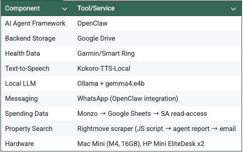
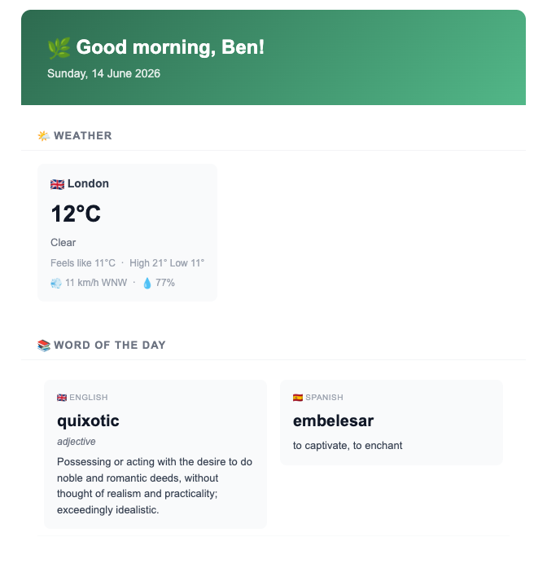
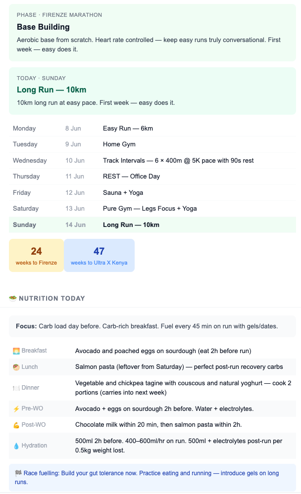

The follow-up to I Gave My AI Assistant Access to My Entire Life Build you very own J.A.R.V.I.S.A few months ago I wrote about what it felt like to give an AI assistant real access to my life. The feedback I got was mostly some version of the same question: okay, but how? This is that article. Fair warning: this is a proper how-to. There are containers, service accounts, cron jobs, and a small server farm involved. It's not plug-and-play - but it's also not as complicated as it sounds if you break it down. I'll walk through everything I've built, why each piece exists, and how it fits together. By the end, you should have a blueprint you can steal along with the scripts used in the project included in this GitHub repository.
The Architecture: A Quick Map
Before diving in, here's what we're actually building: A containerised AI agent (OpenClaw) as the brain. Google Drive as a persistent backend for memory and data sync. A health data pipeline pulling from a Smart Ring and Garmin Watch into a local database. A local TTS microservice so the agent can literally speak. Daily morning reports delivered to WhatsApp - weather, calendar, health summary. Weekly reports covering health, fitness, nutrition, and spending. All of this spread across a two-node mini server farm plus a Mac mini (M4 16GB RAM). It sounds like a lot. It is a lot - but it evolved piece by piece, and that's how I'd recommend building it too. Each component is useful on its own. Together they become something genuinely different.
TL;DR - The Stack

Part 1: Containerising the Agent with OpenClaw
OpenClaw is the framework I use to run the AI agent. It manages sessions, memory, tool access, and integrations. The first thing I did was run it inside Docker - but not Docker Desktop. I'm using Colima, a lightweight container runtime for macOS that spins up a Linux VM and runs Docker inside it. No licensing fees, no bloated system tray app, and crucially - the containers run inside an isolated VM rather than directly on the host OS. That isolation matters. If something in the container misbehaves, it's contained within the VM, not loose on your Mac. The docker-compose setup I landed on separates: The OpenClaw gateway (the agent runtime and API). Any microservices the agent talks to (TTS, health data, etc). Running containerised inside Colima means I can tear down and rebuild individual services without touching the rest of the stack, and the host Mac stays clean - no dependencies installed directly on macOS, no port conflicts, no "works on my machine" surprises. The agent itself lives in the container like a tenant in a flat - it has access to a shared workspace (mounted as a volume), reads its memory files from there, and writes notes back to the same place. What you need: Colima (brew install colima). Docker CLI + Docker Compose. A working OpenClaw config (their docs are solid). A mounted workspace volume so the agent's memory persists across container restarts. Why Colima over Docker Desktop? Fewer resources, no GUI overhead, and the VM boundary gives you a cleaner security model. Once it's running, it behaves identically to Docker Desktop from a workflow perspective.
Part 2: Google Drive as the Backend
This was the piece that unlocked everything else. The agent needs persistent storage - memory files, health data, configuration. Keeping it all local is fine until your machine dies or you want to access it from somewhere else. Syncing to Google Drive solves both problems and adds a nice backup layer for free. The setup here is deliberately simple. On macOS, install the Google Drive app, sign in with your Google account, and configure a specific folder to sync. That's it. No Service Accounts, no API keys, no rclone config to maintain. The Drive app runs on the host and keeps that folder continuously mirrored to the cloud in the background. That local synced folder is then mounted into the container as a host volume. From the container's perspective it's just a regular directory on the filesystem - it has no idea Google Drive is involved. The agent reads and writes files there like anywhere else, and the Drive app silently handles pushing those changes up to the cloud. Continuous sync is the right choice here. The agent reads and writes to its workspace constantly - memory files, notes, logs. A once-daily sync (via rclone, for example) would mean up to 24 hours of potential data loss if something went wrong. With the Drive app running continuously, the worst case is a few seconds. Why this matters: Memory survives container restarts (it lives on the host filesystem, not inside the container). Agent memory files are accessible from any device via Google Drive. Drive acts as a passive audit trail - you can see exactly what the agent has written. The container stays clean - no credentials, no SDK, no network calls baked in. Steps to replicate: 1. Install the Google Drive app on macOS and sign in 2. Choose a folder to sync (create a dedicated one for the agent workspace) 3. Mount that folder into your container in docker-compose.yml: volumes: - /path/to/your/google-drive-folder:/workspace That's the entire setup. Sometimes the simplest solution is the right one.
Part 3: Health Data - From Export to Database
This is the part I'm most proud of, and the part that took the most iteration. The Data Sources I wear two devices: A Garmin Watch (GPS runs, VO2 max, heart rate, stress, Body Battery). A Smart Ring (sleep, HRV, recovery score, body temperature). Together they give me a remarkably complete picture of how my body is actually doing - not just steps, but sleep quality, cardiovascular load, recovery status. Getting the Data Out For Garmin, I'm using the open-source garmin-health-data project. It handles authentication with Garmin Connect, pulls your health metrics, and writes everything into a local SQLite database. It runs as its own container, completely self-contained. The Dockerfile is straightforward - Python 3.11 slim base, a few system dependencies, and the garmin-health-data pip package: FROM python:3.11-slim ENV PYTHONDONTWRITEBYTECODE 1 ENV PYTHONUNBUFFERED 1 RUN apt-get update && apt-get install -y \ build-essential sqlite3 libssl-dev \ && rm -rf /var/lib/apt/lists/* RUN pip install - no-cache-dir garmin-health-data COPY start.sh /start.sh RUN chmod +x /start.sh CMD ["/start.sh"] The compose service mounts a persistent volume for the database and a credentials directory for the Garmin Connect auth token: services: garmin_etl: build: context: . dockerfile: Dockerfile container_name: garmin_etl_pipeline restart: unless-stopped volumes: - /openclawpersistence/garmin-db:/root/garmin_data - ./credentials:/root/.garminconnect environment: - GARMIN_EMAIL=${GARMIN_EMAIL} - GARMIN_PASSWORD=${GARMIN_PASSWORD} Note the ${GARMIN_EMAIL} and ${GARMIN_PASSWORD} syntax - credentials are never hardcoded in the compose file. They live in a `.env` file sitting alongside it: # .env - never commit this to git GARMIN_EMAIL=your@email.com GARMIN_PASSWORD=your-password Add .env to your .gitignore and it never touches version control. This is the pattern I use for any service that needs credentials - the compose file describes the architecture, the .env file holds the secrets, and they never meet in a repo. This is the security principle in practice: secrets belong in environment variables, not config files. It sounds obvious until you're moving fast and tempted to just hardcode it "temporarily". The agent has read-only access to the SQLite database the ETL writes to. It can query it directly - "what was my average resting heart rate last week?" - and get a real answer from real data. Pipeline 1: Garmin Watch → SQLite Garmin Connect API → garmin-health-data container → SQLite DB → Agent queries It runs on a schedule, so the database is kept up to date automatically. No manual exports, no zip files, no watched folders. Pipeline 2: Smart Ring → Google Health Connect → Fitness API The Smart Ring (RingConn) syncs sleep data to the RingConn app, which writes it into Google Health Connect on Android. Rather than exporting a zip file, the daily report queries this data live via the Google Fitness REST API using an OAuth token stored separately on the host. Sleep data from the ring is always fresh - no export step, no file to parse. The report checks for a RingConn source first and falls back to Garmin's sleep data if it isn't available. In practice this means I get the most accurate sleep staging from whichever device has the better reading that night. Smart Ring → RingConn app → Google Health Connect → Google Fitness API → Daily report Two devices, two pipelines, one unified health summary. The daily report script pulls from both and combines them seamlessly. The Google Fitness API is unreliable in practice - reports often come back null or miss previous days. It's also being deprecated. The plan is to replace it with a daily HealthConnect.zip export via the app's backup function, dropped into Google Drive for the agent to unpack directly. This provides a single data source for both Garmin and Ring device for the AI agent to read from. The Weekly Health Report Every Sunday evening I get a health summary covering: Sleep: Average duration, quality score, sleep stage breakdown (light/deep/REM). Heart Rate: Resting average, peak exercise HR, HRV trend. VO2 Max: Current estimate, trend over the month. Recovery: Average Body Battery readings, stress load. The agent pulls this from the database, writes a summary in plain English, and sends it to WhatsApp. Not a wall of numbers - an actual narrative. "Your deep sleep was down this week, which tracks with the late Wednesday session. Recovery looks better heading into the weekend." That's the bit that makes it useful rather than just interesting.
A Note on Email Isolation
The agent has a dedicated Gmail address it uses to send emails - a completely standard account, separate from my personal inbox. This is a deliberate design choice: the agent can send me notifications and updates, but it has no access to read my personal emails at all. Those are two different permission scopes, and keeping them separate means the agent can never inadvertently expose private correspondence. The agent is a sender, not a reader. If you're connecting any email capability to your setup, I'd strongly recommend this separation.
Part 4: The Voice Layer - Kokoro TTS
One of the things I mentioned in the previous article was that the agent can speak. This is handled by a local TTS microservice - no data sent to any cloud service, everything processed on-device. I'm using the Kokoro-TTS-Local project. It runs as a container, exposes an HTTP endpoint, and produces noticeably more natural-sounding speech than most open-source TTS options I tried. The voices have warmth to them - they don't sound like a robot reading a script. The agent calls the TTS endpoint when it wants to speak something rather than just type it. For the morning report in particular, hearing a summary rather than reading it is a genuinely different experience - it feels less like checking an app and more like being briefed. Setup: Clone the Kokoro-TTS-Local repo. Run it as a container (they provide a compose file). Configure OpenClaw to call the TTS endpoint for voice output. Set your preferred voice model in the config. The endpoint accepts text and returns audio - it's as simple as a POST request. The agent handles the rest. How does this work? The full TTS flow is: Agent calls kokoro_tts.sh with the text to speak (and optionally a WhatsApp number). Shell script POSTs to the Kokoro container at 192.168.5.2:7860 via the Gradio API - submits text + voice model (af_heart), streams the response to get the audio URL. Downloads the WAV from Kokoro locally to /tmp/ava_tts/. Converts WAV → Opus using ffmpeg (WhatsApp requires Opus for voice notes). Install it with brew install ffmpeg. Sends to WhatsApp using send_whatsapp_media.mjs.
Part 5: The Morning Report


Weather and word of the day snippetEvery morning, before I've properly woken up, my agent sends a WhatsApp message covering: Weather - current conditions and the day's forecast. Calendar - what's happening today, any conflicts or early starts. Health check-in - yesterday's sleep score, Body Battery heading into the day. ToDo List - markdown list of todo's I need to tick off. Word of the day - English and Spanish. Training day and meal plan - Today's training plan and meals for the day. This arrives at a time I've configured (early enough to be useful, not so early it's annoying). It's delivered via WhatsApp, which means it's waiting in the same place I'd check messages anyway - no new app, no new habit to build. Training and meal plan snippetThe cron job that triggers this runs on the agent's heartbeat scheduler. On a daily schedule, it fires an agent turn that pulls the relevant data, composes the report, and sends it. If there's nothing worth noting, it keeps it short. The TTS component optionally reads this report aloud if I'm near a speaker, but the WhatsApp delivery works fine on its own.
Part 6: The Server Farm
Here's where the practical hardware reality comes in. Running all of this on a single Mac mini with 16GB RAM is technically possible but not ideal. The LLM inference alone (more on that below) is memory-hungry, and running a database, multiple containers, a TTS service, and a sync service on the same machine creates contention. My current setup is three small nodes - mini servers, nothing fancy - plus the Mac mini. Mac mini: Runs Ollama with gemma4:e4b. This is the local model that handles the daily and weekly cron jobs. It's not the sharpest model in the world but it's fast, private, and costs nothing per query. For structured report generation - pulling data, formatting it, sending a message - it performs well. Node 1: OpenClaw gateway + agent runtime. Node 2: Health data pipeline container + SQLite database. Node 3: Kokoro TTS microservice. This distribution means no single machine is a bottleneck, and if one node has a problem the others keep running. The containers talk to each other over a local network - it's just HTTP endpoints and mounted volumes. Is this overkill? Probably, for most people. You can run all of this on a single reasonably specced machine to start, and only split out services if you hit real performance issues. I got to the distributed setup incrementally, not all at once.
Part 7: Markdown as Configuration
One of the simplest things I've done that has the most daily impact: storing my finance, fitness plan, nutrition, and meal plans as Markdown files in the agent's workspace. They look something like this: /workspace finance-tracker.md ← current finance plan, goals, and tracking fitness-tracker.md ← current training plan, race goals, weekly schedule nutrition-plan.md ← meal plan, dietary preferences, shopping logic MEMORY.md ← long-term agent memory The agent reads these files at the start of relevant tasks. When it composes the weekly report, it knows what races I'm training for, what my weekly training schedule looks like, and what meals are planned. It uses all of that context to make the report actually useful. For example: If I have a long run on Sunday, the weekly meal plan will front-load carbohydrates on Saturday. If I've had a hard week of training, the shopping list will include more recovery-focused foods. The agent doesn't have to be told to do this - it reads the plan and applies common sense.
Part 8: The Weekly Report
The weekly report is where everything comes together. Every Sunday it pulls from: Health database - the sleep, heart rate, and recovery summary from Part 3. Fitness tracker - what training happened vs what was planned. Monzo spending data - read-only access via a service account key to a Google Sheet that Monzo exports to. Gives a breakdown of the week's spending by category. Meal plan - what was planned, what the shopping list is for the week ahead. The output is a structured WhatsApp message (no markdown tables - bullet points only for readability) covering: Health and recovery summary. Training compliance ("you hit 4/5 sessions this week"). Weekly spending vs budget. Shopping list for the coming week. Suggested nutrition focus based on next week's training load. It takes about two minutes to read. It replaces probably an hour of manually checking different apps and spreadsheets. The Monzo integration is worth calling out specifically. Monzo's IFTTT integration can push transaction data to a Google Sheet. A dedicated Service Account has read-only access to that sheet - the agent can query current and historical spending without ever touching my actual bank account or having write access anywhere near it.
Part 9: Custom Tools - The Rightmove Scraper
One of the things that surprised me about this setup is how easy it is to extend. The agent isn't limited to built-in integrations - it can call scripts directly and consume their output like any other tool. Case in point: I'm currently flat hunting. So I wrote a JavaScript script that scrapes Rightmove based on a set of criteria - location, price range, search radius, minimum and maximum bedrooms - and returns the listings. When I want a property search, I just ask. The agent runs the script, processes the results, and produces a structured report with each listing rated on a five-star system based on how well it matches my priorities. That report gets emailed to my personal inbox via the dedicated sending address. Not WhatsApp - email makes more sense here, it's something to sit down with rather than glance at. The script itself is nothing fancy. A few hundred lines of JS, no container required - the agent just calls it directly. That's the point. You don't need a microservice for everything. Sometimes a script is enough, and the agent is perfectly happy to run one, consume the output, apply some judgment, and produce something useful. This is what an extensible personal agent actually looks like in practice - not just a set of fixed integrations, but a platform you can keep adding to. Got a one-off data need? Write a script. The agent will figure out what to do with the result.
What I'd Do Differently
A few honest notes from building this iteratively: Start with the memory layer. Before any integrations, get persistent memory working. Everything else is more useful once the agent actually knows who you are. Health data is harder than it looks. Google Health's export format is not clean. You'll write a parser, it'll break, you'll fix it, and then the schema will change slightly. Budget time for this. Local models are good enough for reports, not for everything. gemma4:e4b running on the Mac mini handles structured reporting tasks well. For anything more nuanced - analysis, writing, reasoning through edge cases - I route to a cloud model. Having both options and knowing when to use each is the key. The server farm is optional. I built mine because I had the hardware and I like tinkering. A single mid-spec mini PC (32GB RAM, fast SSD) running Docker would handle everything described here comfortably.
What's Next
A few things on my list: Real-time health data - the current pipeline relies on manual Takeout exports. I'm working on pulling directly from the Garmin API for fresher data. Proactive anomaly detection - if my HRV drops significantly or my resting heart rate spikes, I want the agent to flag it rather than wait for the weekly report. Better voice integration - bidirectional, so I can speak commands rather than type them. More microservices - other services like Plex server, DNS+Ad-Blocker, Home Assistant, Weekly-Backups/Nextcloud Storage. The foundation is solid. The interesting work now is in what you build on top of it.